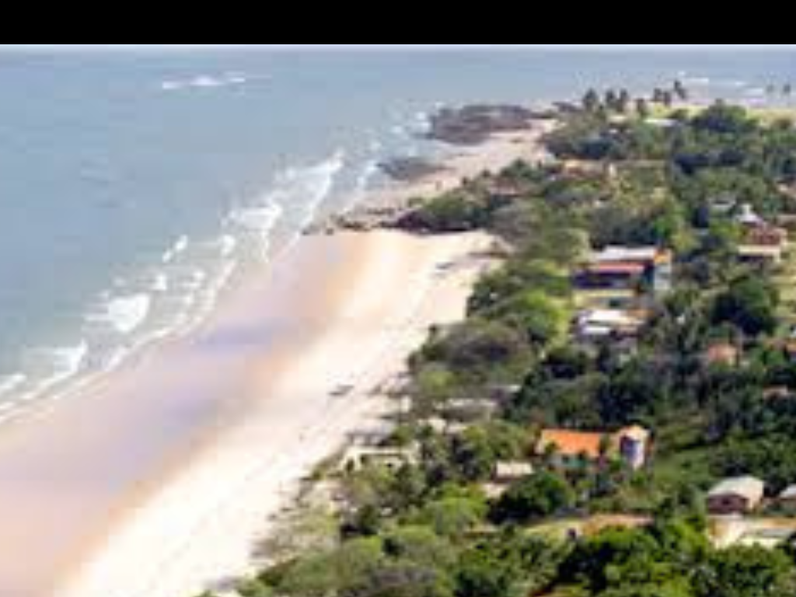

O Pará é um dos maiores e mais importantes estados da região Norte do Brasil, destacando-se por sua imensa extensão territorial, riqueza mineral e forte influência da floresta amazônica. Sua capital, Belém, é conhecida pela arquitetura histórica, pela culinária típica amazônica e pelo tradicional mercado Ver-o-Peso. O estado possui uma economia baseada na mineração, agropecuária, pesca, extrativismo vegetal e geração de energia, além de desempenhar papel estratégico na exportação brasileira. O Pará também abriga grande diversidade cultural, marcada pelas tradições indígenas, africanas e portuguesas, presentes em manifestações como o Círio de Nazaré, uma das maiores festas religiosas do país. Com rios imponentes, vasta biodiversidade e relevância ambiental global, o Pará é uma das principais portas de entrada para a Amazônia brasileira.

voltar